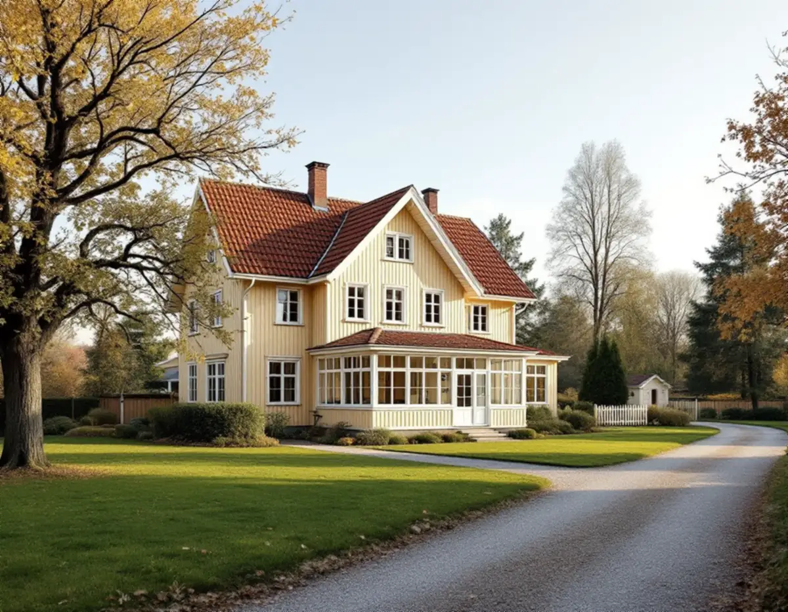

Platsbesök
Vi tittar på huset, tomten och vad ni vill bygga.
I Älvsjö gäller på flera håll äldre stadsplaner som staden själv beskriver som generösa. En sådan plan kan tillåta mycket – men den har också sina egna villkor. Innan en tillbyggnad eller ett nytt hus ritas behöver byggrätten vara utredd. Geal Entreprenad AB tar sådana projekt som total entreprenad, och här är hur detaljplanen styr bygget i Älvsjö.

Enligt stadens vägledning Varsam utveckling av småhus- och villaområden växte små stationssamhällen fram när järnvägen byggdes, och på 1910-talet fick några av dem status som municipalsamhällen med egen administration och beskattningsrätt, bland dem Älvsjö. Stadsplanen för Älvsjö villastad togs fram av Per Olof Hallman enligt samma grundprinciper som hans planer för den tidiga trädgårdsstaden.
Vägledningen nämner Älvsjö, Långbro, Herrängen, Stureby och Örby bland de områden där äldre stadsplaner tillåter generösa byggrätter. Intilliggande fastigheter har köpts upp och styckats av, och på samma yta har flera en- och tvåbostadshus eller flerbostadshus byggts. Staden skriver att en sådan fortsatt utveckling ställer stora krav på varsamhet för att bevara den gröna karaktären.
Kring Älvsjö centrum, med sitt kollektivtrafikläge, kan utvecklingen enligt vägledningen innebära större förändring och att nya detaljplaner behöver tas fram. Den som äger en villa nära centrum har därför skäl att se vilka planarbeten som pågår, inte bara vilken plan som gäller i dag.
Detaljplanen för din fastighet finns i stadens e-tjänst Bygg- och plantjänsten. Den kan bestämma vad fastigheten får användas till, hur mycket som får byggas, höjdlägen, mark som inte får bebyggas och minsta avstånd till gräns. Den kan också innehålla bestämmelser som skyddar en byggnad eller ett område eller som kräver lov för sådant som lagen annars inte kräver lov för.
I samma e-tjänst kan du se pågående planarbeten och hämta de ritningar som stadsbyggnadskontoret har på fastigheten. Staden påpekar att arkivritningarna är handlingar från tidigare ärenden och inte nödvändigtvis stämmer med verkligheten, och att man bör kontrollmäta inför ett eget byggprojekt. Det gör vi innan byggrätten räknas.
För att få bygglov för vissa åtgärder måste fastigheten och det befintliga huset stämma med detaljplanen, det som kallas ett planenligt utgångsläge. Efter reglerna från 1 december 2025 är utgångsläget inte längre ett hinder för bygglov när det har gått 15 år sedan planens genomförandetid löpte ut. Äldre detaljplaner kan ändå ha bestämmelser som säger att utgångsläget fortfarande är ett hinder, och då gäller planens bestämmelser före lagen.
En del åtgärder kan göras utan lov även om de strider mot planen. Stockholms stad skriver att en lovfri tillbyggnad på upp till 30,0 kvadratmeter på ett en- eller tvåbostadshus får placeras på prickmark, men den ska fortfarande stå 4,5 meter från gränsen eller ha grannarnas skriftliga medgivande. Är huset eller området särskilt kulturhistoriskt värdefullt krävs bygglov ändå, och det visar Stadsmuseets klassificeringskarta.
Är det du vill bygga inte förenligt med detaljplanen behöver du ansöka om planändring. Du kan söka om du äger fastigheten eller tomträtten, företräder en bostadsrättsförening eller samfällighet som har beslutat att söka, eller har fastighetsägarens godkännande. Inom fyra månader från att ansökan är komplett får du ett planbesked, alltså besked om staden inleder ett planarbete eller inte.
Ändringar i detaljplaner ska följa Stockholms översiktsplan, och en ansökan som inte gör det avslås troligen. Vid ett positivt besked tecknas ett planavtal, och planarbetet börjar först när fakturan för planbeskedet är betald. Bygger du ett helt nytt hus behövs ingen klimatdeklaration om du som privatperson bygger huset privat, eller om bruttoarean inte är större än 100,0 kvadratmeter. Läs mer om nybyggnad av villa och om takets historia i takrenovering i Älvsjö.
Vi tittar på huset, tomten och vad ni vill bygga.
Detaljplan, pågående planarbeten och gamla ritningar tas fram.
Huset mäts in så att byggrätten räknas på verkliga mått.
Lovfritt, bygglov eller planändring – och vad det betyder för tiden.
Varje del av projektet redovisas för sig.
En kontakt från ansökan till slutbesked.
Rotavdraget är 30 procent av arbetskostnaden, högst 50 000 kronor per person och år och högst 75 000 kronor tillsammans med rutavdrag. Material och resor ger inget avdrag, och du ska äga bostaden när arbetet utförs.
Rotavdraget gäller ombyggnad och tillbyggnad av huset du har, inte ett helt nytt hus. En tillbyggnad ger avdrag om den sitter ihop med ytterväggen till minst 75 procent eller har en dörr emellan. Bygglovshandlingar och arkitekt ger inget avdrag. Vi drar av rotavdraget direkt på fakturan.
Vad detaljplanen tillåter, hur mycket utredning som behövs och projektets storlek väger tyngst. Efter ett gratis platsbesök får du ett skriftligt kostnadsförslag.
Total entreprenad för villan.
Byggfirma →Takbyte, takbesiktning och plåtarbeten.
Takläggare i Älvsjö →Långbro, Herrängen och Långsjö.
Takrenovering i Älvsjö →Villastad, nya grannhus och puts på trä.
Fasadrenovering i Älvsjö →Golvvärme under trägolv i äldre villor.
Golvläggare i Älvsjö →Slipa och ge golvet en ny kulör.
Golvslipning i Älvsjö →Villastad, flerlägenhetsvillor och kök i lager.
Köksrenovering i Älvsjö →Villastad, egnahem och småstugor i Älvsjö.
Målare i Älvsjö →Plåttak för solceller, kupor och verandor i Älvsjö.
Plåtslagare i Älvsjö →Staket, grind och plank i villastaden.
Snickare i Älvsjö →